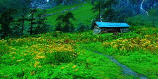

The Beauty and the known places of Province 1
From magical mountains to scenic hills and wetlands of Tarai.
Nepal is famous not only for its diverse culture and rich natural heritage, but it also has diverse geographical regions, which makes it a must-visit place once in a lifetime.
The newly-carved out Province 1 under the federal system is one of the seven provinces in the country. It has 12 districts spread from Mount Everest, the highest mountain in the world, to one of the greenest districts in Ilam and downward to Koshi Tappu, the serene wetland known for its wildlife reserve.
Besides these natural wonders, this province has people from different ethnicities, making it an amalgamation of diverse culture and language.
How to reach Province 1
The fastest way to travel is to take a direct flight from Kathmandu to Biratnagar and Bhadrapur. It takes about 40 minutes (to Biratnagar) to 55 minutes (to Bhadrapur). You can also take a public bus which takes around 15 hours to reach Biratnagar and more time onwards, while you can also hire private vehicles.
Major Attractions:
Mt. Everest: Mount Everest or Sagarmatha in Nepali is also known as the Roof of the world being the highest mountain in the world at 8,848 meters (29,029 feet) above sea level. It is a dream for the mountaineers from all over the world to reach atop Everest. However, for those who love adventures, they can trek to the Everest Base Camp at 5,380 meters (17,600 feet) and experience life in the high mountain range and rare biodiversity in the Sagarmatha National Park. Besides Everest, the Province 1 also boasts of three other high mountains - Lhotse (8,516 meters or 27,940 feet), Makalu (8,485 meters or 27,838 feet), and Cho Oyu (8,201 meters or 26,750 feet) - and is also home to several other prominent peaks above 6,000 meters. The adventure seekers are mesmerized by the magnificent view of this highest Himalayan range and feel that the trip is worth every penny. But it takes 9 days to reach the Everest base camp from Lukla making it a lifetime experience.
How to reach the Everest Region
There are direct flights ftrom Kathmandu to Lukla. It is a 9-day trek to the Everest Base camp from Lukla and takes around 5 days to return to Lukla. Travel to this region is possible only through travel operators, as you also need to take permission from the Nepal government.
Best time to travel
Pre-monsoon (February to May) and Autumn (late September to December)
Pathibhara Temple:
Pathibhara Devi Temple or Mukkumlung is one of the most popular pilgrimage sites in Nepal, located in Taplejung at the height of 3,794 meters. It is also considered one of the holy places for Rais and Limbus (or Kirant???) (the local ethnic group/s). The trek to Pathibhara Devi is exhilarating and is a unique experience due to the pristine natural beauty combined with rich cultural heritage.
Best time to travel:
Autumn (September to November) and Spring (March to May)
How to reach:
There are direct flights to Taplejung (Suketar) from Kathmandu and Biratnagar. It is an 8-9 hour trek to the Pathibhara temple. There is also a direct public bus service from Kathmandu and Biratnagar to Taplejung.
Makalu Barun:

Makalu is considered one of the toughest 8,000m peaks to climb and the camping trail to Makalu Base Camp from the south is considered one of the tougher routes in Nepal. Makalu Barun region boasts of 3,000 species of flower plants, 440 species of birds and 75 species of mammals. The trek to the Great Himalaya Trail, which crisscrosses from the east to the west Nepal, begins from this region. It is, however, recommended for experienced trekkers only. The Makalu Barun National Park offers some of the most spectacular sceneries in the Himalayas. You also need to get a government permit to visit this region.
Best seasons to travel:
Autumn and Spring
How to reach:
There are direct flights from Kathmandu to Tumlingtar. From there, it is a 9-day trek to the Makalu Base Camp.
Halesi Mahadev:
Halesi Mahadev Cave lies in Khotang district of this Province and is one of the popular pilgrimage sites. Halesi Mahadev is a two feet tall Shiva Linga situated inside the cave and is worshipped by both Hindus and Buddhists.
Best seasons to travel:
Throughout the year but devotees throng this place during the Shivaratri festival in March.